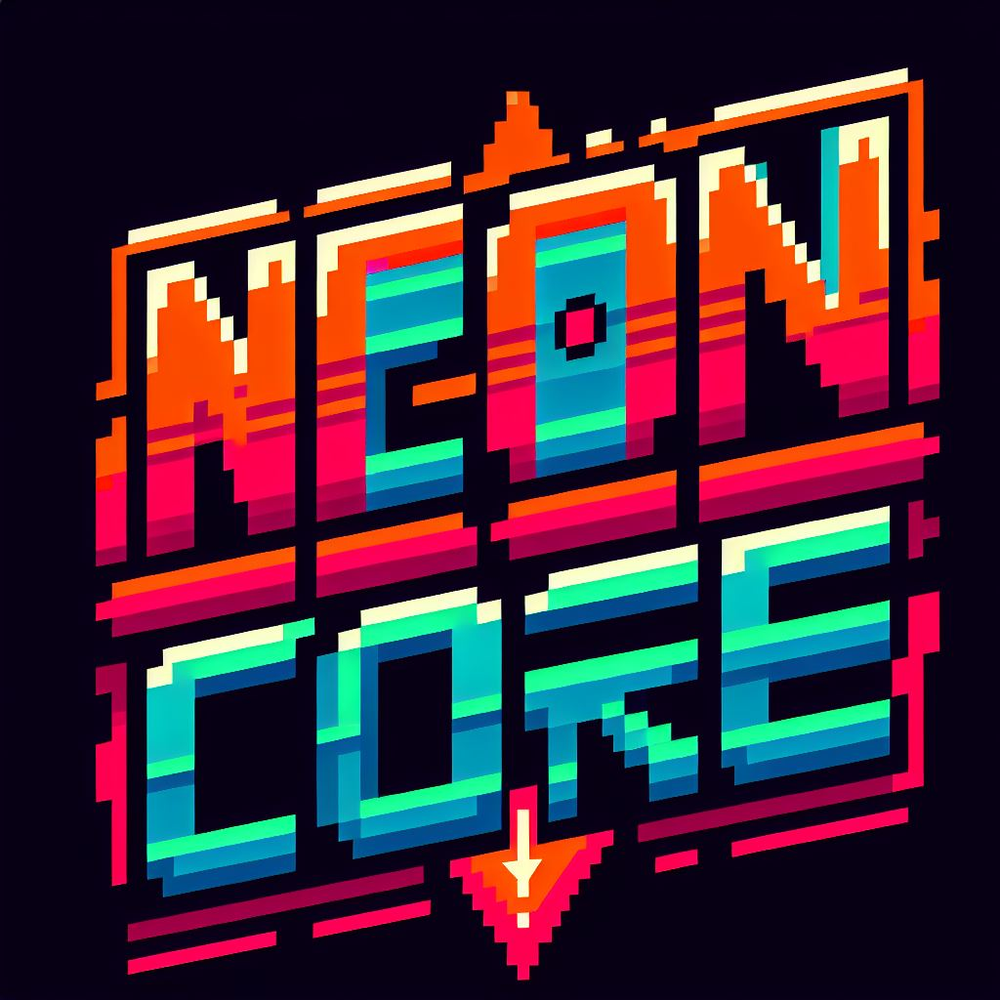

Sinopse
A Terra está morta.
Os últimos recursos naturais foram exauridos, e agora corporações e mercenários
vagam pelos destroços do sistema solar pilotando mechas mineradores, adaptados para
combate e exploração extrema.
Seu objetivo: extrair e encher três tanques de Xenoflux antes que outros o façam.
Xenoflux é um material altamente instável encontrado apenas em exoplanetas devastados
por colapsos gravitacionais. Sua origem é desconhecida, mas estudos indicam que ele se forma
a partir da fusão de elementos exóticos expostos a intensas forças eletromagnéticas.
Ele é a última fonte de energia capaz de alimentar as cidades espaciais remanescentes e o motivo
de guerras brutais entre mineradores espaciais e corporações sem escrúpulos.
Gameplay
Escolha o seu Mecha Minerador
Cada mecha no jogo foi originalmente projetado para extração de minérios e, com o tempo, adaptado para guerra.
Eles possuem sistemas de escavação, módulos de extração, além de armas para proteger suas colheitas.
.jfif)
- Caverna-12 "Titan Striker" – Mecha pesado, projetado para mineração profunda, possui resistência alta e ataques devastadores.
- Specter-09 "Shadow Phantom" – Um mecha ágil, criado para extração rápida de minérios em zonas perigosas. Especialista em ataques críticos.
- Goliath MK-III "Overlord Siege" – Modelo industrial equipado com brocas e perfuradores gigantes. Muito resistente, mas lento.
Cada mecha inicia com um deck inicial único, contendo cartas de mineração e combate.
Exploração do Mapa
O jogador navega por um mapa procedural de um planeta hostil, cheio de ruínas industriais, crateras e zonas de mineração abandonadas.
Cada ponto no mapa representa um evento, batalha ou local de escavação.
Tipos de Locais no Mapa
.jfif)
- Zonas de Extração – Permite minerar e coletar fragmentos de Xenoflux.
- Batalhas Contra Outros Mineradores – Confrontos contra outros mechas tentando reivindicar as mesmas áreas.
- Estações de Reparos – Onde você pode consertar danos e melhorar módulos do mecha.
- Mercado Negro – Troque créditos por cartas melhores, peças raras e relíquias.
- Eventos Narrativos – Situações inesperadas, como encontrar uma base abandonada com recursos valiosos ou ser atacado por piratas espaciais.
Combate Baseado em Cartas
.jfif)
- O deck representa armas, defesas, sistemas de extração e módulos de melhoria.
- Cada turno, o jogador usa energia limitada para ativar habilidades.
- Algumas cartas coletam Xenoflux enquanto outras destroem inimigos.
- Oponentes podem ser mechas rivais, drones hostis ou tempestades magnéticas que afetam
o funcionamento do maquinário.
Mecânicas do Xenoflux
.jfif)
Além de ser o objetivo principal do jogo, o Xenoflux adiciona mecânicas estratégicas extras:
- Superaquecimento do Mecha – Xenoflux é instável e pode causar superaquecimento, obrigando os jogadores a gerenciar sistemas de resfriamento.
- Instabilidade Energética – Quanto mais Xenoflux acumulado, maiores os riscos de falhas no sistema ou de ser detectado por inimigos.
- Mercado Negro e Corrupção – Alguns mineradores preferem vender Xenoflux no mercado negro em vez de completar seus tanques.
Progressão e Desbloqueio Permanente
.jfif)
Mesmo após perder, cada partida desbloqueia novas cartas e relíquias para uso em tentativas futuras:
- Novas peças de mecha que alteram atributos e habilidades.
- Relíquias tecnológicas que mudam completamente o gameplay.
- Novas cartas de mineração, defesa e ataque para personalizar o deck inicial.
- Desbloqueio de novos mechas mineradores, cada um com estilos únicos.